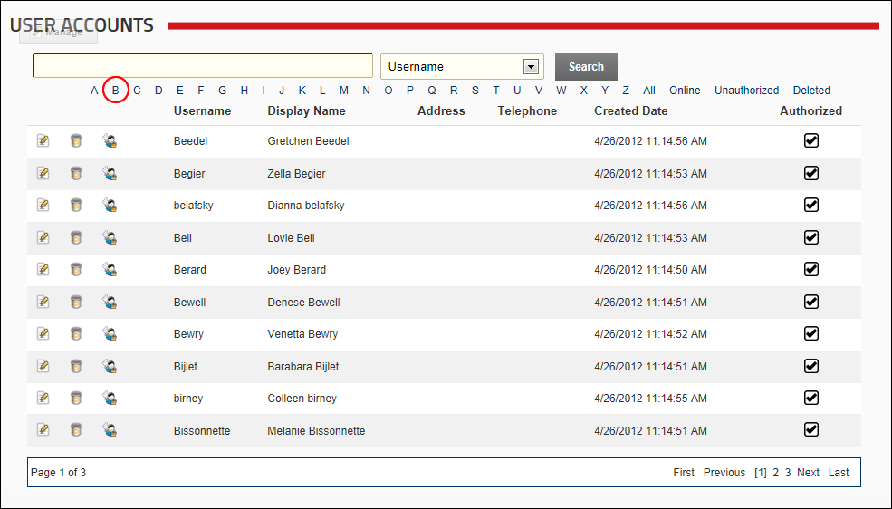

Filtering User Accounts by Username
How to filter user account records by the first letter of all user names on the User Accounts module.
- Navigate to Admin >
 User Accounts - OR - Go to a User Accounts module.
User Accounts - OR - Go to a User Accounts module.
- Click on the linked [letter of the alphabet] which is the first letter of the persons user name. This displays all matching user accounts is alphabetical order.

Filtering User Accounts by Username